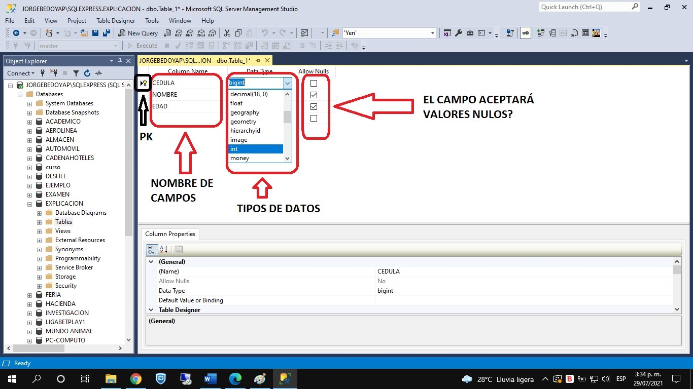
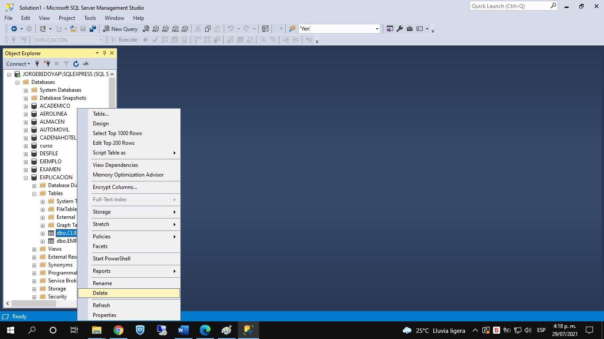

La principal estructura que existe en una base de datos son las tablas. Es la estructura donde se almacenan los datos.
En este módulo, vamos a explicar cómo se crean tablas, cómo se le actualiza su estructura y como se borran tablas. La explicación se hará, mostrando estas actividades en los dos ambientes de trabajo: modo gráfico y modo comando.
Inicialmente, procedemos a mostrar cómo se crea una tabla por modo gráfico.
|
Se le da clic al signo mas (+) que hay a la izquierda de la base de datos donde vamos a crear la tabla. SE abre el contenido de la base de datos, donde una de las carpetas es "Tables". A dicha carpeta se le da clic derecho, luego se escoge la opción "New", y luego se escoge la opción "Table". |
|  |
Se abre una cuadrícula con tres columnas: nombre de campo, tipo de dato y la pregunta de si permite nulos o no. Se debe diligenciar los datos en dicha cuadrícula por renglones: primero se coloca el nombre del campo, luego se escoge el tipo de dato del campo (ahí se puede desplegar el combo box para escoger el tipo de dato, de una lista de 36 opciones), y por último se especifica si el campo va a aceptar valores nulos (se deja el chulito) o no (se quita el chulito). Para definir cuál campo es la clave primaria, se le da clic derecho al campo y en el menú emergente que aparece, se selecciona la opción "Set Primary Key". En este caso, aparece una llave amarilla al lado izquierdo del campo. |
| Para grabar la tabla, se selecciona el disco de grabación que está en la parte superior izquierda. En ese momento se abre una ventana donde se debe especificar el nombre de tabla. Luego, damos clic al botón "OK". |
| Luego de darle clic al botón de refrescar, la tabla creada aparece abriendo la carpeta "Tables" de la base de datos. |
Para crear una tabla por modo comando, seguimos los siguientes pasos.
|
Se abre la ventana de comandos y se digita la siguiente instrucción: CREATE TABLE <nombre tabla a crear> (<nombre campo No. 1> <Tipo de Dato> [PRIMARY KEY], <nombre campo No. 2> <Tipo de Dato> [NOT NULL], ............................................................................................. <nombre campo No. N> <Tipo de Dato> ) La lista de campos debe ir incluida entre paréntesis. Cada campo se separa del siguiente por medio de una coma (,). Si un campo es la clave primaria, se digita la cláusula PRIMARY KEY. Y si un campo no acepta valores nulos, se digita la cláusula NOT NULL. Es importante resaltar que para crear una tabla, debemos estar ubicados en la base de datos correspondiente. Al final, se selecciona el comando con el mouse y se ejecuta. Debe aparecer la tabla en la carpeta "Tables" de la base de datos. La instrucción CREATE TABLE es DDL, ya que está creando una estructura de datos.
|
A continuación miremos como se borra una tabla por modo gráfico y por modo comando.
|  | Para borrar una tabla por modo gráfico, damos clic derecho en la tabla a borrar, y en el menú emergente seleccionamos la opción "Delete". |
| Luego aparece una ventana de confirmación del borrado, donde se le da clic al botón "OK". En este momento se borra la tabla, desapareciendo de la lista de tablas de la base de datos. |
|
Para borrar una tabla por modo comando, en la ventana de comandos, se digita la siguiente instrucción: DROP TABLE <nombre tabla a borrar> Se selecciona el comando con el mouse y se le da clic al botón "Execute". Para ver la desaparición de la tabla, de la lista de tablas, se debe dar clic al botón de refrescar. Esta instrucción es DDL ya que borra una estructura de datos. |
Para alterar la estructura de una tabla, hay diferentes opciones las cuales se enuncian a continuación, con su respectivo comando.
- Para adicionarle un nuevo campo: ALTER TABLE <nombre tabla> ADD <nombre nuevo campo> <tipo de dato>
- Para borrarle un campo existente: ALTER TABLE <nombre tabla> DROP COLUMN <nombre campo a borrar>
- Para renombrar una tabla: EXEC sp_rename <nombre actual tabla>, <nombre nuevo tabla>
- Para cambiarle el tipo de dato a un campo: ALTER TABLE <nombre tabla> ALTER COLUMN <nombre campo> <nuevo tipo dato>
- Para cambiarle el nombre a un campo: EXEC sp_rename <nombre tabla>.<nombre actual campo>,<nombre nuevo>,'COLUMN'
| Crear Tablas - Modo Gráfico | Crear Tablas - Modo Comando |